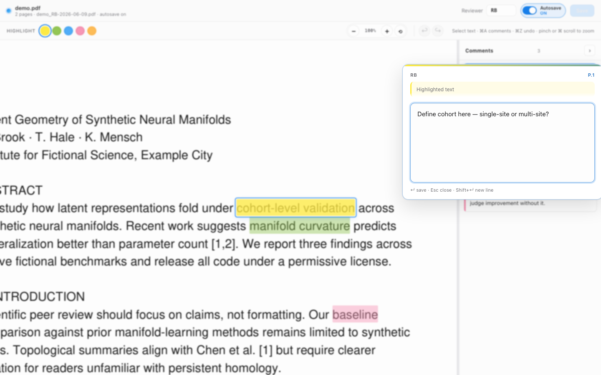

One task: review a scientific paper. Opens in a native window — no browser tab juggling. Select text, type your comment, move on. Citations open in a popup. Highlights save as standard PDF annotations you can share with authors.

Detects your OS, downloads the latest release, and installs. Opens in a native window (no browser URL bar). Use peerfold … --browser for the system browser instead.
PowerShell — installs to %LOCALAPPDATA%\Programs\PeerFold and adds it to your user PATH.
If you already use Python 3.10+. Same native window as the standalone app.
paper_RB-2026-06-09.pdf with Acrobat-compatible highlights